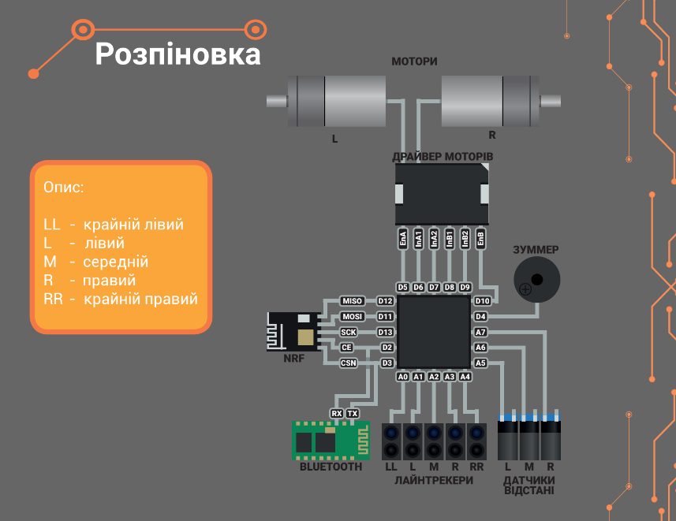

Підказки до MakerTime

Плата: Arduino Nano
Processor: Atmega328P(OldBootloader)
Ціль: проїхати повністью чорну лінію за 18 або меньше секунд
Функція для їзди вперед
void forward(){
analogWrite(5, 100); //Швидкість приблизна
digitalWrite(6, HIGH); //Напрям моторів може відрізнятись
digitalWrite(7, LOW); //Напрям моторів може відрізнятись
digitalWrite(8, HIGH); //Напрям моторів може відрізнятись
digitalWrite(9, LOW); //Напрям моторів може відрізнятись
analogWrite(10, 100); //Швидкість приблизна
}
Функція для їзди назад
void backward(){
analogWrite(5, 100); //Швидкість приблизна
digitalWrite(6, LOW); //Напрям моторів може відрізнятись
digitalWrite(7, HIGH); //Напрям моторів може відрізнятись
digitalWrite(8, LOW); //Напрям моторів може відрізнятись
digitalWrite(9, HIGH); //Напрям моторів може відрізнятись
analogWrite(10, 100); //Швидкість приблизна
}
Приклад виклику функції для керування моторами
! Виклик усіх функцій (окрім оголошення пінів та встановленням швидкості зв'язку)
відбувається у void loop()
void loop(){
forward();
backward();
}
Приклад зчитування з середнього датчика чорної лінії для руху вперед
! Знак оклику обов'язковий інакше квант буде реагувати на білий колір !
if(!digitalRead(A2)){ //Піни можете подивитись у розпіновці
forward();
}
Приклад зчитування з середнього-правого датчика чорної лінії для руху вперед
! Знак оклику обов'язковий інакше квант буде реагувати на білий колір !
if(!digitalRead(A3)){ //Піни можете подивитись у розпіновці
right();
}